Decades later, the friends fill the white temple POET rebuilt. Between the laughing, the hugs and the football, he looks into the empty rooms of the dead and holds his glass of burning sand while it runs.
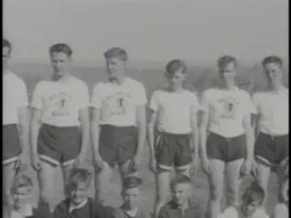

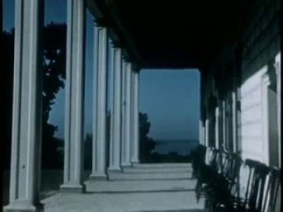
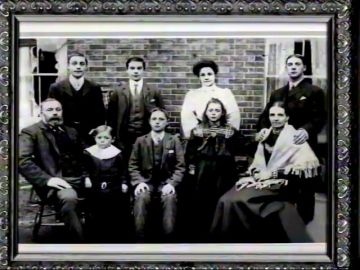
The poem
A reunion poem told as compressed time. 'Decades later' there is 'less time for words and more space for laughter, hugs with no reason, loud voices so our hearts can be overheard.' Joy is loud on purpose, so the heart can be heard. Its counter-images are short and dark: 'my mind drifts into the darkness of our afterlives, and those rooms are empty.' The gratitude is wide and specific, 'to every living tree in the forest for the shared years and the shared memories.'
It pivots on 'and those rooms are empty. We are all here, each holding our glasses of burning sands and known journeys'. The empty afterlife rooms turn into presence, and the toast glass becomes an hourglass on fire, so time runs out while they celebrate. 'This is brotherhood' (followed by the longest pause, 1.9 s) is the poem's answer. Its most physical image follows: 'we can place our ears upon the next brother's soul and follow paths of hilltops and canyons, of blinding lights and infinite nights', ending on 'laughter and football and recollections that bring us home every time.' The page text adds elders 'now past' and winds that 'part ways', which the spoken take leaves out; stage them lightly.
Look
Warm low evening light inside a white hall, with practical glows (hourglass flames, the wall screen) doing most of the modelling and long soft shadows thrown by the cards onto the white walls. For the afterlife rooms everything drops to blue-black, and the elders are pale tracing-paper figures backlit so the paper grain glows. The archive photo is a real-feeling white-bordered card with a deckled edge and slight curl. Bodies are dense kraft card, and the hourglasses are clear acetate over painted sand so the flame reads through glass.
Our best elements
The strongest things we already have for this poem: generated footage, Atlantis views, found film and painted kit sheets.
The archival photo the friends restage (12.2b); opens inside the photo card
A real group of young men shoulder to shoulder in team shirts, the 'decades younger' picture the poem implies
The empty room of the afterlives (L02-L03); also a reference for the temple_hall benches
A bright, plain, symmetrical white hall with long low benches and no people, which is empty in the exact sense of the line
Plate or answer for temple_shore_terrace (12.5)
White columns framing blue water. The temple terrace exists in real film, and the column gaps are vertical panes
12.4a insert for hourglass_shelf; alternate passage answer
A large, bright, clean hourglass with sand mid-fall, and the literal object of the turn
Framed portrait on the white shelf; elders 'now past'
A multi-generation family in an ornate frame. A rectangle we can hang in the hall and open later
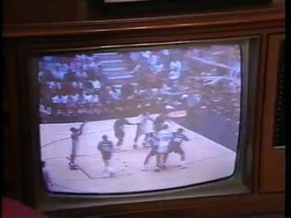
wall_screen reference and fill for 12.2a cheering
A real sports broadcast inside a screen frame, a bright rectangular surface that the cut-outs can face
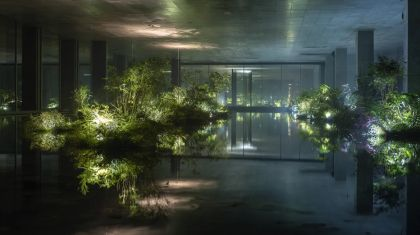
Plate for temple_hall at night / 'grateful to every living tree'
Figure-free, tall glass panes, trees growing out of reflection. Calm, and big enough to hold a crowd of cards

Hall dropped to dark for 12.3; tall windows as archive surfaces
Figure-free, vertical window panes all round, warm lantern points; it gives the afterlife dark without losing the temple

'those rooms are empty': the afterlife corridor, with the archive opening in its doorway
Figure-free, with doorways full of light. A real vertical surface for the empty rooms

Reference and insert for the elders as pale backlit figures (12.3a)
Already looks like the elder_memory_silhouette costume: pale, still, backlit, faceless

Standalone insert: the elders leaving through the living trees
Back view into blazing light among trunks, which covers both 'every living tree in the forest' and the afterlife. Use without a puppet

Plate for temple_shore_terrace (12.5) and the walk into 13
Figure-free, wet stone steps down to the bay, hills and lights across the water: dusk, wind and parting
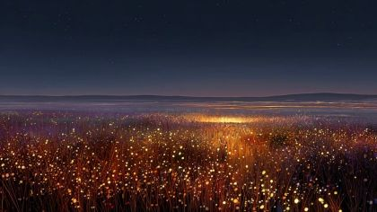
'blinding lights and infinite nights' journeys montage behind the ear-to-soul hold
Figure-free and wide, a sea of small lights to the horizon. It reads as all the nights they shared
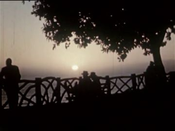
Answer for the terrace parting (12.5) or 'bring us home'
Figures at a rail under a tree against the sun, the same staging as POET and BROTHER_1 on the terrace, in real film
What we need
- A figure-free plate of the white temple hall full of evening light with long low benches and a blank wall for the screen. view_042 (the temple district's pool hall with the skyline window, used by the rendered passage) is not among this poem's matches, so confirm it as the hall plate
- Painted cards for BROTHER_1 (brother_casual), FRIEND_1/2 (friend_casual) and the ELDERS. All packs are unpainted templates, and their WHO panels have only one-line costume notes with no reference image
- The family packs' style strip shows POET's own bearded head three times, so the brother and friends will be painted as POET clones unless each gets a distinct face reference
- The hourglass in four states (running, burning at the neck, gone dark and smoking, shelf giant), which is the poem's central prop
- Archive of football among friends (touch football, a ball spiralling, a sunset meadow). The football matches (copper mining, watchmaking) are wrong
- Archive of a family reunion, a picnic or old friends hugging, ideally Black home movies, for the 'decades later' answer
- Empty-chairs back room and welcome-home banner props from the scene book
- A meadow or porch at sunset for P12-008/009 (football, then the porch light)
Characters
POET kit →
Host of the reunion in the temple he rebuilt: he greets, hugs, laughs, cheers, drifts into the empty rooms, closes his grip on a burning hourglass, and lays his ear on his brother's chest
Costume. red_black_sunglasses: black track jacket with red piping from the shoulders down the chest, black track trousers, black Chelsea boots; sunglasses as a plug-in card. Here the sunglasses come off (pushed up or in hand) for the hug and the ear-to-soul, so his eyes carry the 'heart overheard' beat
Expressions. joy laughing (head back, mouth open), recognition (soft smile, brows up), listening (eyes half-closed, head tilted), tired / drifting (eyes unfocused, mouth slack), sad (head lowered), calm (closed smile)
Hands. open (greeting, hug, arms up), peace (photo pose), cup(hourglass) → grip closed around it, relaxed, arm over brother's shoulder
Cards to paint. head joy laughing (head back); head listening (tilted, eyes closed, no sunglasses); head tired/drifting; head lowered; sunglasses pushed-up card; hand cup(hourglass) L; hand grip-closed over hourglass L; peace hand R; over-shoulder arm (front); jacket hem flap
poet.12.action is a blank layout: panel A names the right key pose ('lean · threequarter, hugs BROTHER_1, leaning in') but nothing is painted. There are only three hand boxes (open, peace, cup·hourglass), with no closed-grip state for the passage and no listening head for the ear-to-soul beat. The WHO column is correct. The C style strip shows piped black legs and boots; follow it.
Its action sheet for this poem is on Character Kits v2.
open the action sheet →| action | beats | how the card does it |
|---|---|---|
| Grip closes on the burning hourglass (passage, L03) | hourglass rests in a cupped palm at chest → fingers curl in on 'We are all here' → closed and held through the archive → no release in shot | threequarter body; two replacement hand cards (cup open → grip closed) swapped on one frame, not rotated; head card swaps calm → head-lowered; flame card keeps flickering above the fist |
| Hug with no reason | arms open wide as BROTHER_1 approaches → lean in → arms close behind the other's back → hold, rocking 2° → step back laughing | two threequarter bodies overlap at centre; POET's far forearm card moves to the layer behind BROTHER_1's torso; heads swap to joy eyes-closed; hip brads tilt both bodies 6° toward each other |
| Ear upon the next brother's soul | he steps in → head tips sideways → ear lands on BROTHER_1's chest → hold, eyes closed, while rings rise from the chest into his ear → straightens | profile POET, front BROTHER_1; neck brad tilts the profile head 25° using a dedicated 'listening' replacement head (eyes closed, ear forward); heard_rings code-drawn from the brother's chest |
| Laugh out loud | intake (shoulders up) → head back, mouth open → rings leave the chest → settle into a smile | threequarter; laughing head-back replacement head; chest card scales 102%; heard_rings |
| Restage the old photo | shuffle into line → arm over BROTHER_1's shoulder, peace hand → freeze on the flash → the archive photo dissolves into their same pose | front bodies in a row; POET's arm card on the layer over BROTHER_1's shoulder; peace hand card; all heads swap to the same posed smile at the flash |
| Arms out to the widening distance | arms open → hold as the gap widens → wind lifts the jacket hem → a small nod | profile; open hands; jacket hem as a separate flap card on a brad, flutter cycle |
BROTHER kit →
BROTHER_1: the oldest friend. They come through the colonnade arms first, hug him, cheer the game, hold the football for the photo, and are the chest he listens to
Costume. brother_casual: a heathered grey hoodie (hood down, drawstrings), mid-blue jeans with worn knees, white sneakers; no red anywhere. Give them a visibly different face from POET: clean-shaven or a short boxed beard, a different hairline, maybe a few grey hairs at the temple for 'decades later'
Expressions. joy, calm, listening, sad (head bowed), awe (looking back at the elders)
Hands. open (hug, cheer), fist (cheer), grip(football) at hip, cup(hourglass) R, hand on POET's shoulder
Cards to paint. all 5 body views painted; heads: joy, calm, listening, sad, awe; football grip hand; cup(hourglass) hand; fist
family.12.action panel A asks for 'lean · threequarter_back, hugs POET back', which is right. Its WHO column is empty, with no face or costume image, and the style strip borrows POET's heads, so it needs its own face sheet before painting.
No action sheet exists for this poem yet.
| action | beats | how the card does it |
|---|---|---|
| Arrive arms-first through the colonnade | step through a column gap → arms already opening → stride → arms wide | threequarter walk on hip/knee brads; upper arms rotate out on shoulder brads |
| Stand still to be listened to | square up → breath in → hold still while POET's ear rests → hand comes to POET's back | front body; chest card rises 2%; far hand card moves onto POET's back layer |
FRIENDS kit →
FRIEND_1 and FRIEND_2: FRIEND_1 holds up the old snapshot and frames the restaging on a phone; FRIEND_2 laughs head-back. Later each holds an hourglass gone dark
Costume. friend_casual: an unzipped olive or tan jacket over a plain white or navy t-shirt, khaki chinos, brown loafers or canvas shoes. Vary the two by jacket colour (olive / navy) and face. No red
Expressions. joy laughing, calm, focused (framing the phone)
Hands. pinch(archival_photo), point, grip(phone_camera) both, cup(hourglass), relaxed
Cards to paint. front, profile, back bodies x2 colourways; laughing head-back head; pinch(photo), point, grip(phone) x2, cup(hourglass)
Templates exist (family.friend_casual.*) with only the line 'a jacket over a t-shirt, chinos'. There is no face reference, and the style strip reuses POET's head.
No action sheet exists for this poem yet.
| action | beats | how the card does it |
|---|---|---|
| Hold up the old photo | dig in pocket → raise the snapshot at arm's length → point at it with the other hand → hold | front body; pinch hand card carries the photo card on a brad; point hand on the other forearm |
| Frame the restaging | phone up with both hands → step back → flash → lower | back view; both forearms on one rod; phone card in two grip hands; flash fx at the phone |
ELDERS kit →
ELDER_1-3: the remembered elders, 'now past', who stand at the back of the dark hall; the centre one lifts their arms as if telling the creed
Costume. elder_memory_silhouette: pale, almost-silhouette long coats and a brimmed hat on one, a head-wrap on another; painted in one tone of silver-grey on thin tracing card so a back light glows through
Expressions. none legible: faces left as soft blank ovals
Hands. relaxed, open (arms raised, creed)
Cards to paint. 3 front bodies on tracing card; arms-raised arm pair for ELDER_2
Only an unpainted front template and the line 'a pale backlit figure, almost a silhouette'. gen_0248381690 is the best look reference.
No action sheet exists for this poem yet.
| action | beats | how the card does it |
|---|---|---|
| Telling the creed | still → centre elder's arms rise slowly → a pale ring leaves their chest → arms hold → fade with the dark | front body only; shoulder brads; a backlight behind tracing card; creed_rings code-drawn; fade by dimming the backlight, not by opacity |
Props
Sorted by priority. Each has its design, how to build it, the references found in the archive and our footage, and a prompt for its card sheet.
old faded snapshot of the brothers decades younger, white deckled border
12 cm card, slight curl; the image area is left blank so the archive (Ivan Besse 1938 team line-up) plays inside; states: front, back with handwritten date, held at arm's length
References found
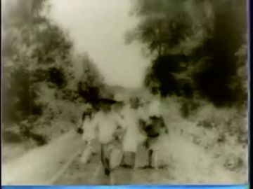
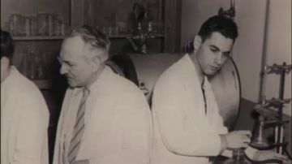


Generation prompt
Prop card sheet in the kit style: an old snapshot photograph with a white deckled border as a flat corrugated-cardboard card, the picture area flat pale grey (to be replaced), faded edges in gouache with confident ink line, raw kraft cut edge, flat-on even light, plain background; separate cards: front, back with a pencilled date, slightly curled front
hand-sized glass hourglass, dark wood ends, sand running, a small flame smouldering at the neck; held like a raised glass
18 cm; clear acetate bulbs over painted gold sand, dark walnut-brown card ends; states: running, burning (flame card at neck), guttering, out and smoking, empty
References found
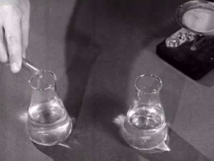
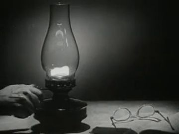
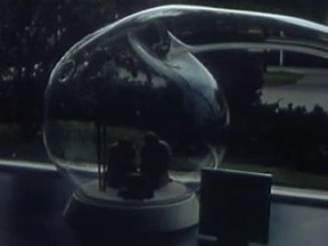


Generation prompt
Prop card sheet in the kit style: a hand-sized hourglass as flat corrugated-cardboard cards, dark walnut gouache ends with confident ink line, the glass bulbs left pale and clear with gold sand painted inside, raw kraft cut edge, brass brad where it plugs into a hand, flat-on even light, plain background; separate cards for each state: sand running, burning with a small orange flame at the neck, flame guttering, flame out with a grey smoke curl, empty
the tall hourglass on the white wall shelf, the last one still alight
40 cm tall hourglass card on a 120 cm floating white shelf; states: lit/running, the last flame, dark
References found
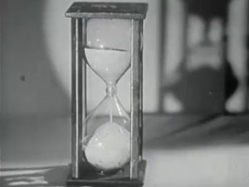
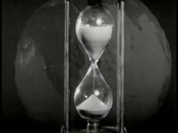
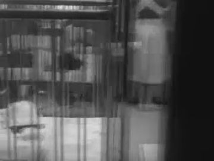
Generation prompt
Prop card sheet in the kit style: a tall hourglass standing on a long floating white wall shelf, flat corrugated-cardboard cards, walnut and white gouache with confident ink line, raw kraft cut edge, flat-on even light, plain background; separate cards: the shelf alone, the tall hourglass running, the tall hourglass burning at the neck, the tall hourglass dark
the back room of empty chairs for the friends who are gone (scene book 12.2)
row of 5 plain white chair cards, 90 cm; states: in light, in blue-black dark
Generation prompt
Prop card sheet in the kit style: plain white chairs as flat corrugated-cardboard cards, side and three-quarter views, matte white gouache with confident ink line, raw kraft cut edge, brass brads at the leg joints, flat-on even light, plain background; separate cards: chair lit warm, chair washed in blue-black dark
worn leather American football
28 cm brown card with white laces; states: held, mid-spiral (motion-smear card), resting on grass
References found

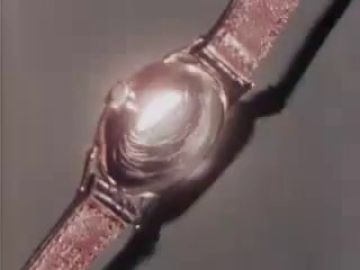
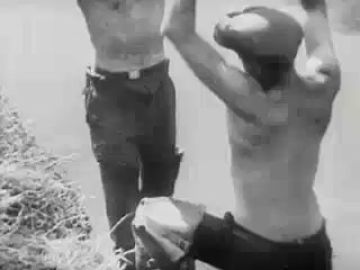
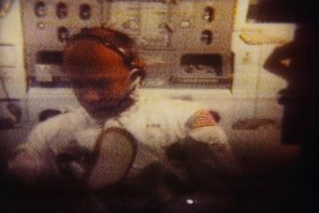

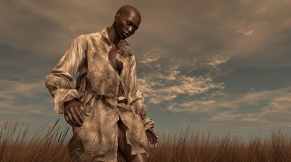
Generation prompt
Prop card sheet in the kit style: a worn leather American football as flat corrugated-cardboard cards, tan-brown gouache with confident ink line and white laces, raw kraft cut edge, flat-on even light, plain background; separate cards: side view held, spiralling with a painted motion smear, resting on its side
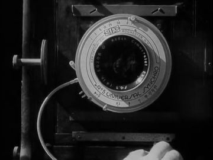
smartphone held up to restage the archival photo
15 cm black card; screen states: live view of the line-up, flash, the old photo
References found

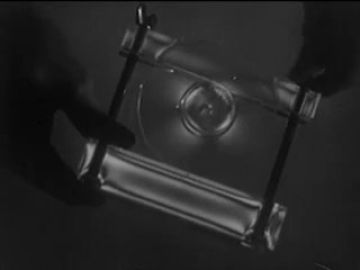
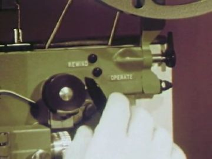
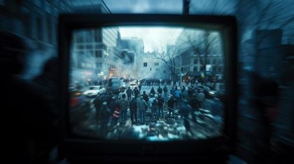
Generation prompt
Prop card sheet in the kit style: a smartphone held landscape as a flat corrugated-cardboard card, black gouache body with confident ink line, raw kraft cut edge, flat-on even light, plain background; separate cards: screen showing a small group line-up, screen blown white by flash, back of phone with a lit flash dot
large flat screen on the white wall, a game playing
200 cm black frame card with a blank window; the archive game is comped in; states: on (game), on (score), off
References found
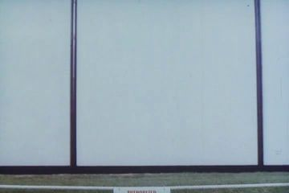
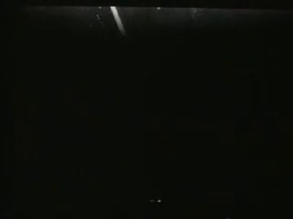
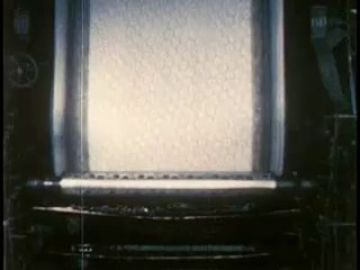
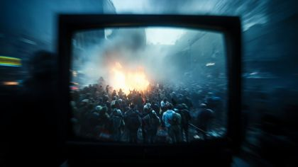
Generation prompt
Prop card sheet in the kit style: a large flat wall screen as a flat corrugated-cardboard card, thin black frame in gouache with confident ink line, the screen area left flat mid-grey, raw kraft cut edge, flat-on even light, plain background; separate cards: screen frame on, screen frame off (dark glass)
welcome-home banner over the colonnade (scene book 12.0)
long paper pennant card, hand-lettered WELCOME HOME; states: hanging, flapping in wind
Generation prompt
Prop card sheet in the kit style: a long hand-lettered 'WELCOME HOME' banner as flat corrugated-cardboard cards, cream paper with ink lettering and gouache, raw kraft cut edge, brass brads at the hanging corners, flat-on even light, plain background; separate cards: banner hanging straight, banner curled by wind
Places
temple_hall
Inside the temple of 11, now lived in: white walls, long low benches, an open colonnade to the shore, a big screen on the wall, warm evening light. It drops to blue-black for the afterlife beat
Where the archive opens: the wall screen (bright rectangle, strongest); tall windows (vertical panes); the archival photo card held near camera; the framed portrait on the shelf; the hourglass bulb (small: insert only)
References: our footage, Atlantis views, found film


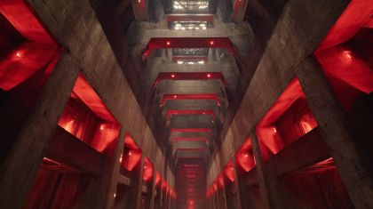
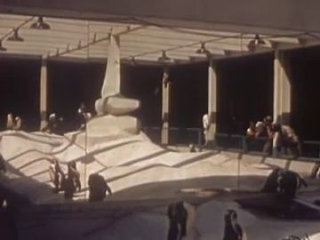
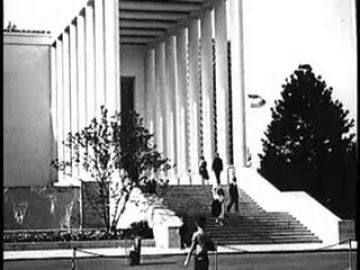
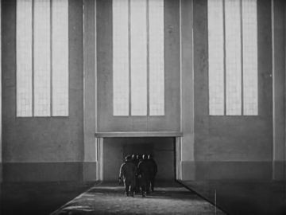
Generation prompt
Wide photographic plate, no people: the interior of a clean white modern temple hall at golden evening, long low white stone benches, tall narrow windows and an open colonnade onto a calm sea, one large blank white wall at the left, a long floating white shelf, warm low sun raking across the floor, locked-off camera at chest height, 16:9
afterlife_rooms
The darkness of the afterlives: a corridor of doorways in blue-black, each room lit and empty. 'Those rooms are empty'
Where the archive opens: each lit doorway (vertical, bright: best); the wet floor reflection (faint)
References: our footage, Atlantis views, found film
Generation prompt
Photographic plate, no people: a long dark blue-black corridor of open doorways, each doorway full of soft white light from an empty room, a wet stone floor reflecting the doors, quiet and still, locked-off camera, 16:9
temple_shore_terrace
The temple terrace at dusk: open sea and sky, wind off the water, the brothers at the far ends of the frame as the gap between them widens
Where the archive opens: the gaps between columns (vertical); the sea at the horizon (only if the film is bright)
References: our footage, Atlantis views, found film


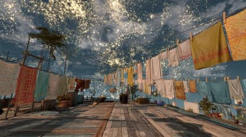

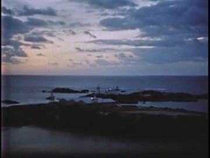
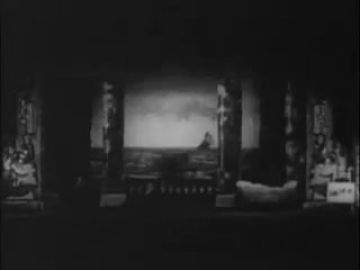
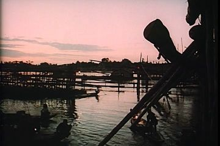
Generation prompt
Wide photographic plate, no people: a white stone temple terrace with a colonnade at dusk opening onto a calm sea, hills and a few far lights across the water, deep teal sky with a last warm band at the horizon, wind ruffling the water, locked-off camera, 16:9
forest_edge
Scene book 12.4: outside at the forest edge, friends touching tree trunks under picnic lights; gratitude to every living tree
Where the archive opens: the bright gap between trunks
References: our footage, Atlantis views, found film
Generation prompt
Photographic plate, no people: the edge of a tall forest at dusk, a few strings of warm picnic lights between trunks, bright sky glowing through a gap in the trees, locked-off camera, 16:9
Effects
| effect | how, in this cut-out world |
|---|---|
| heard_rings | Code-drawn concentric rings in warm white, 2-3 per loud syllable, rising from the chest card and fading at 1.5x the head width; driven by the voice amplitude |
| camera_flash | Two white frames plus a cool blue overexposure on the cards; the phone screen card swaps to white. Reference arch_ab5a0e30 THE PHOTOGRAPHER |
| creed_rings | Slower, thinner, silver rings from the centre elder's chest, carrying across the dark hall to POET's back |
| memory_glow | Backlight behind the elders' tracing-card bodies; dim it to fade them and leave the paper grain glowing |
| fire_small | 3-card flame cycle (orange/gold cut paper) at each hourglass neck, with a warm practical glow on hands and faces |
| falling_sand | Code particles of gold sand inside the acetate bulb; the pile grows as a replacement-card sequence. Hold one insert of arch_7aa7b9d2 Coffee Break |
| smoke_wisp | A grey vellum curl on a wire rising from each guttered hourglass |
| wind_gusts | Jacket-hem and hood flap cards flutter on brads; the banner curls; arch_07ccf74e Wind in Trees in the column gaps |
| drifting_ember | One orange paper dot on a fine wire drifts across the gap between the brothers and out over the sea |
The puppet passage
his line · 12_L03
“and those rooms are empty. We are all here, each holding our glasses of burning sands”
the archive answers · The National Institutes of Health (2007)
“So I think we're holding our own.”
a grip that closes and holds · window: the tall window of the mirror-pool hall that frames the night skyline; the archive picture replaces the skyline inside the frame.
Keep. The hinge line ('and those rooms are empty. We are all here, each holding our glasses of burning sands') and the grip that closes and holds are right: one gesture, held. The window is a vertical pane, the strongest kind of surface. The NIH answer 'we're holding our own' is a quiet echo of 'holding our'.
Better. Make the grip a two-card replacement (cup → closed fist) so it closes in one beat, and add a head-lowered card at the same frame. The skyline window in view_042 sits at the far end of the hall and is small, so push in or re-stage beside a near side window, so the archive fills at least a third of the frame. Paint the hourglass large and bright (flame lit) so it reads at medium-wide. If the NIH clip is a talking head, it reads weakly; Coffee Break's hourglass (arch_7aa7b9d2) is a stronger literal answer to drop into the same window.
Other lines that could carry one:
- 'we can place our ears upon the next brother's soul': his head lowers onto BROTHER_1's chest (listening head card, held); the Ivan Besse 1938 team line-up (arch_08119d0f) opens in the tall window behind them
- 'My mind drifts into the darkness of our afterlives, and those rooms are empty': head lowers; the Westerveld white hall of empty benches (arch_1f856017) opens in the lit doorway of gen_9c5f9c7c4a
- 'This is brotherhood.': hand rests on BROTHER_1's shoulder and stays; FRIEND_1's held-up archival_photo card opens into the old team line-up
- 'laughter and football and recollections that bring us home every time': the football is held out to BROTHER_1 (object held out); the wall_screen opens on a found home-movie football game (Straight Talk TV arch_5ebbe5eb as stand-in)
- 'grateful to every living tree in the forest': palm on a trunk card; the bright gap between trees (gen_8610c5199b) opens to Wind in Trees (arch_07ccf74e)
Scene ideas
- Restaged photo: FRIEND_1 holds up the archival_photo card, the friends shuffle into the same line as the Ivan Besse 1938 team (arch_08119d0f), the flash fires, and the real film plays in the photo's white border while the cut-outs freeze
- Empty rooms: the hall goes blue-black; the camera drifts down the corridor of gen_9c5f9c7c4a and each doorway opens on archive: Westerveld's empty benches (arch_1f856017), then the lamp and spectacles of Twenty-Six Old Characters (arch_3033887e)
- Elders: pale tracing-card elders at the back of the hall, styled after gen_0248381690; when they fade, cut to gen_8610c5199b, the two robed figures walking into the forest light
- Burning sands: insert of Coffee Break's hourglass (arch_7aa7b9d2), then the reunion wide where the card hourglasses gutter one by one until only the shelf glass burns beside the framed Belmont family portrait (arch_8f479a60)
- Cheering the game: the cut-outs throw arms up at the wall_screen card carrying a found game (Straight Talk 1992 TV, arch_5ebbe5eb), lit by its flicker
- Shared roads: during the ear-to-soul hold, the window behind runs gen_bad0cf8d7a (field of lights) into gen_67023f1334 (blinding starburst), 'blinding lights and infinite nights'
- Terrace parting: the brothers stand at either end of the Invitation to a Nation colonnade (arch_686c2948) tinted dusk teal; the last ember crosses the gap; answer with Liberty's silhouettes at the rail (arch_8dfdb41f)
- Opening wide: view_068's crowd gathered round a fire under cosmic arches as the far layer for 'decades later', a shared fire before the white hall
References to look for
| what | where to look |
|---|---|
| Reunion and old friends | archive: 'family reunion home movie', 'church picnic 1960s', 'homecoming', 'Thanksgiving touch football home movie', 'class reunion'; prefer Black family home movies (e.g. South Side Home Movie Project) |
| Group photo then and now | archive: 'team photo posing', 'graduation group'; photographers: Gordon Parks, Roy DeCarava ('The Sweet Flypaper of Life'), Irina Werning 'Back to the Future' restaged photos |
| Gathering in collage | Romare Bearden collages of gatherings and the porch; Jacob Lawrence crowd compositions for card-crowd layout |
| Elders and memory | Julie Dash 'Daughters of the Dust' (elders, gathering by the water); Garrett Bradley 'Time' (home video as compressed decades) |
| Hourglass and burning time | archive: 'hourglass close-up', 'sand timer'; Jan Švankmajer and the Brothers Quay for small object animation in glass |
| Silhouette figures in light | Lotte Reiniger backlit silhouettes; Michel Ocelot 'Princes et Princesses' for paper figures on glowing grounds |
Our footage for this poem
The 20 generated clips and 8 Atlantis views closest to the poem (CLIP, image against its treatment and lines).

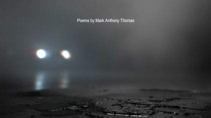
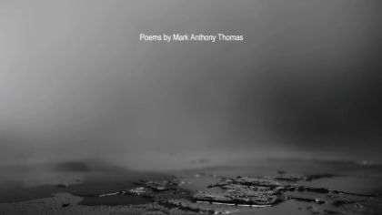

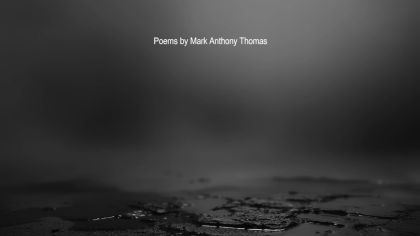
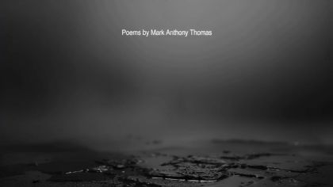
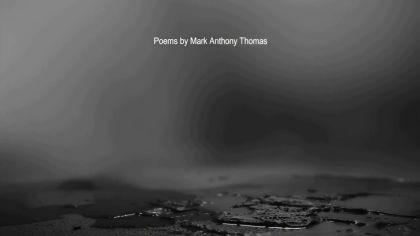


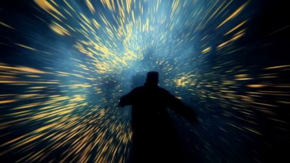


The kit
| status | kind | item | source |
|---|---|---|---|
| need | body | ELDER_1-3 pale tracing-card silhouettes | family.elder_memory_silhouette.body.front template; look from gen_0248381690 |
| need | fx | heard_rings, creed_rings, flash, flame cycle, sand particles, ember | code + paper |
| need | fx | Archive: football among friends; reunion home movie | to find |
| need | hand | POET hands: open, peace, cup(hourglass), grip-closed(hourglass), over-shoulder arm | hands template + poet.12.action; to paint |
| need | head | POET heads: laughing head-back, listening tilted, drifting, lowered, calm; sunglasses pushed-up card | heads template; to paint |
| need | prop | Hourglass x5 + burning/out/smoking states | to generate (prompt above) |
| need | prop | Hourglass shelf + white shelf | to generate |
| need | prop | Football, phone_camera, empty chairs, welcome banner | to generate |
| need | sound | Room tone of loud laughter / crowd of friends under 12.1 | to find or record |
| partial | body | POET red_black_sunglasses bodies (threequarter lean, front, profile, back) | existing pack templates poet.red_black_sunglasses.body.*; to paint |
| partial | body | BROTHER_1 brother_casual, 5 views + heads + hands | family.brother_casual.* templates; needs its own face reference |
| partial | body | FRIEND_1/2 friend_casual, front/profile/back, 2 colourways | family.friend_casual.* templates; needs face references |
| partial | prop | Archival photo card (blank picture area) | card to generate; picture = arch_08119d0f-bde7 |
| partial | prop | Wall screen frame | code-drawn frame; fill = archive game |
| partial | set | Temple hall plate (evening, benches, blank wall) | assets/view_053.jpg / view_013; confirm view_042 from the temple district |
| partial | set | Terrace at dusk plate | assets/view_097.jpg + arch_686c2948-a38e |
| have | fx | Archive answers: team photo, empty hall, hourglass, TV game, porch colonnade | arch_08119d0f, arch_1f856017, arch_7aa7b9d2, arch_5ebbe5eb, arch_686c2948 |
| have | set | Afterlife corridor plate | assets/gen_9c5f9c7c4a.jpg |